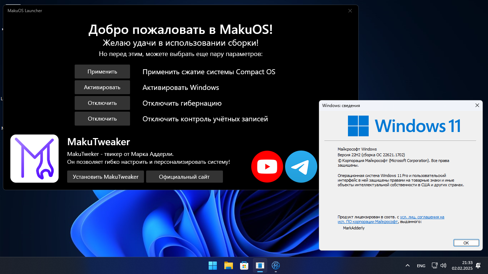
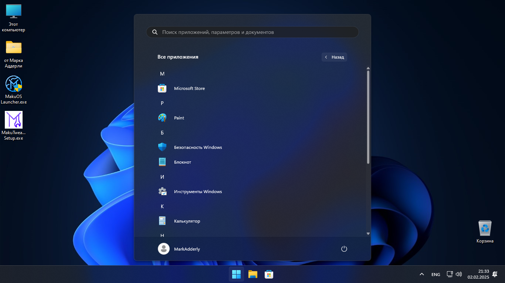

Adderly.Top
Adderly.Top
MakuOS 11 Lite 22H2 V2
(Windows 11 22H2, 22621.1702)
Windows Defender удалён // Обновления заблокированы, но есть по 2023 год // Pro редакция // Русский язык


Удалённые приложения:
Microsoft Edge, Microsoft Store, Windows Defender, Xbox, OneDrive, Windows Subsystem For Linux, Windows To Go, Cortana, Retail Demo Content, Windows Mixed Reality, Будильники, Кино и ТВ, Медиаплеер, Терминал, Карты, Диктофон, Люди, Погода, Новости, Почта, Календарь, Clipchamp, Microsoft Teams, Microsoft Family, Quick Assist, Dev Home, Solitaire Collection, Power Automate Desktop, Get Help, Feedback Hub, Outlook, Microsoft Todos, Компоненты OpenSSH, голосового ввода, Windows Hello, RAW и VP9 кодеки.
Прочие изменения:
Убрана проверка на железо при установке системы.
Обновления заблокированы на 22H2 версии.
Интегрированы все обновления по лето 2023 года.
Интегрированы Microsoft Visual C++ 2005 - 2022 x86 и x64
На рабочем столе есть папка "от Марка Аддерли", в котором находятся установщики браузеров, VLC, MPC-HC, Telegram, Zapret, Steam, Everything, а так же ссылки на библиотеку софта, и Telegram канал с репаками без вирусов.
В сборке изменено OOBE, в котором был включён вход в локальную учётную запись и скрыты какие либо страницы с рекламой.
На рабочем столе имеется приложение "MakuOS Launcher", в котором можно применить различные твики первой необходимости, и активировать систему.
Применённые настройки:
Основное:
• Включены скрытые файлы, папки, и диски
• Включены расширения файлов
• Включена поддержка скриптов PowerShell
• Включена иконка "Этот Компьютер" на рабочем столе
• Включена возможность удалить Microsoft Edge
• Включена максимальная производительность системы
• Включён буфер обмена
• Для ускорения быстродействия, было отключено ускорение индексации диска
• По умолчанию открывается "Этот ПК" вместо "Главная"
• Разрешен вход в локальный аккаунт
• Отключены виджеты
• Отключён брандмауэр
• Отключён SmartScreen
• Отключён поиск Bing на панели задач
• Отключён центр обновления системы
• Отключена дефрагментация дисков
• Отключено удаленное управление реестром
• Отключено автошифрование диска с помощью Bitlocker
• Отключена отправка отчёт об ошибках Windows
• Отключена служба карт
• Отключена служба UPnP устройств (она никому не нужна)
• Отключена служба смарт карт
• Отключена служба раздачи мобильного интернета
• Отключена активность лишних фоновых приложений
• Отключена изоляция ядра
• Отключено залипание клавиш
• Отключена задержка контекстного меню
• Отключена автоперезагрузка при синем экране смерти
• Отключён сенсорный ввод клавиатуры
• Отключено получение геолокации для UWP приложений
• Отключён Content Delivery Manager, который отвечает за предустановку рекламы
• Отключено требование интернета в первоначальной настройке
• Автоматически введён 30 дневной ключ продукта
• Удалён рекламный диалог "Давайте завершим настройку этого устройства"
• Запрещена установка стандартных мусорных UWP приложений после обновления системы
• На панели задач добавлена кнопка "Завершить задачу" в ПКМ по программе
Телеметрия:
• Запрещена диагностика установленных приложений
• Запрещена публикация активности пользователя
• Запрещён сбор информации о пользователе
• Запрещён сбор информации об устройстве пользователя
• Запрещён автоматический вход в аккаунт OneDrive
• Запрещён сбор информации о производительности системы
• Запрещено экспериментирование над системой пользователя
• Отключена отправка результатов поиска пользователя
• Отключена активация управления голосом
• Отключён сбор информации о голосе пользователя при использовании функций ввода голосом